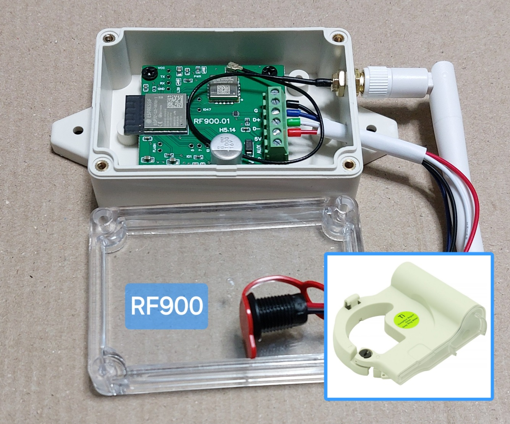
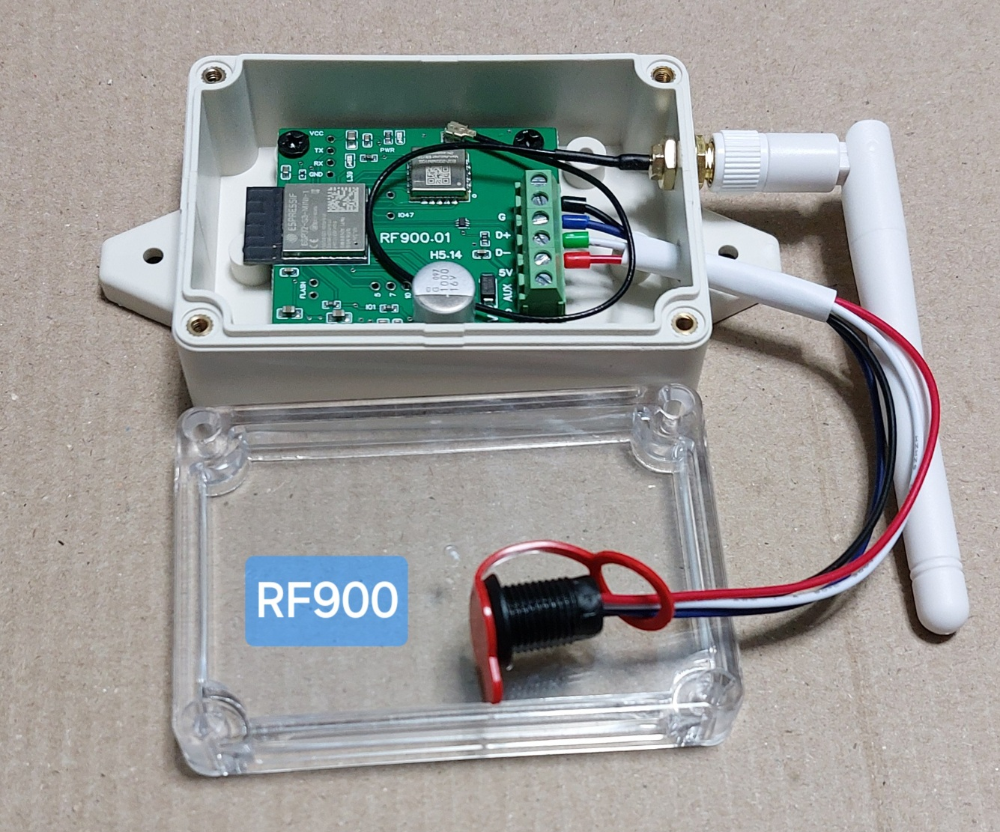

Contadores de Água

Leitor WiFi wM-Bus
Consumos em tempo real
O Easy HAN ® RF900 apenas escuta
os sinais RF do contador de água.
Os dispositivos abaixo são
colocados pelo comercializador.
Sistemas Testados
Suportados
Diehl Izar RC 868 I R4 (sappel)
* Código Postal:
- 4150
- 8005
Janz Arrow JV/MST (maddalena)
* Código Postal:
- 4150
Integração no Home Assistant
forum

Easy HAN ® RF900
Easy HAN ® RF900
- ESP32-S3 8MB
- ESPHome
- USB Power+Data
- CC1101 868Mhz 915Mhz
Preço: 41€
Portes Incluídos.
Correio Registado.
Water Meters
Wmbus wM-Bus
Wmbus Reader